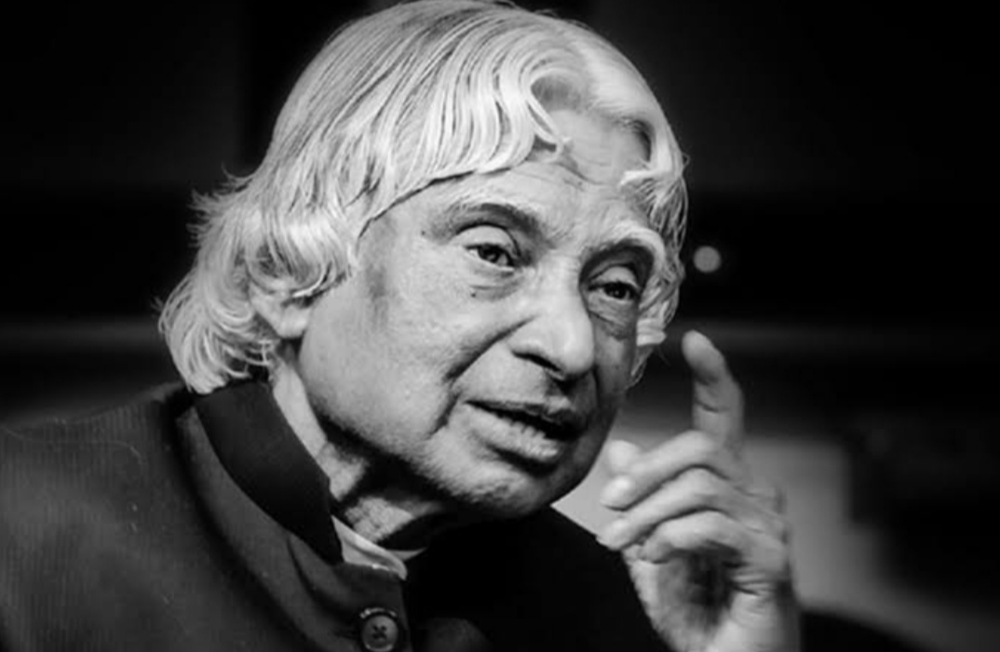

d.r A.P.J Abdul Kalam

Abdul Kalam (Former President of India)
- Dr. A.P.J Abdul Kalam was born on 15 October, 1931 to a Tamil Muslim family in Rameswaram, then in Madras Presidency in British India and now in Tamil Nadu.
- His father's name was Jainulabdeen, who was a boat owner and imam of a local mosque. His mother's name was Ashiamma, who was a housewife.
- Abdul Kalam was the youngest of five siblings, the eldest was a sister, namely Asim Zohra and three elder brothers, namely Mohammed Muthu Meera Lebbai Maraikayar, Mustafa Kalam and Kasim Mohammed. He was close to his family and always helps them, though he remained the bachelor whole life.
- His ancestors had been wealthy traders and landowners, with numerous properties and large tracts of land. They trade groceries between the mainland and the island to and from Srilanka and also ferrying the pilgrims from the mainland to the Pamban Island. So, their family got the title "Mara Kalam Iyakkivar" (wooden boat steerers) and later known as "Marakier."
But by 1920s, his family had lost most of his fortune; their businesses failed and by the time Abdul Kalam was born are in the stage of the poverty-stricken.
- To help the family, Kalam started selling newspapers at an early age.In his school days, Kalam had average grades but was described as a bright and hardworking student who had a strong desire to learn. Mathematics was his main interest.
- "Knowledge without action is useless and irrelevant. Knowledge with action converts adversity into prosperity."
"Education gives you wings to fly. Achievement comes out of fire in our subconscious mind that ‘I will win."
- He had completed his matriculation from Schwartz Higher Secondary School, Ramanathapuram and later he went to Saint Joseph's College where he became a physics graduate. In 1955, he went to Madras to study aerospace engineering at Madras Institute of Technology.
During his third year of graduation, he was assigned a project to design a low-level attack aircraft together with a few other students. Their teacher had given them a tight deadline for completing the project, it was very difficult. Kalam worked hard under immense pressure and finally completed his project within the stipulated deadline. The teacher was impressed by the dedication of Kalam.
Click Here For More Info